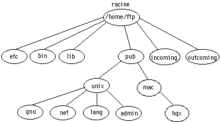

Ftp anonyme

Exemple de session ftp sur un site archive
- % ftp ftp.enst.fr
- Connected to ftp.enst.fr
- 220 sirocco.enst.fr FTP server (SunOS 4.1.3) ready
- Name (ftp.enst.fr:moi): anonymous
- 331 Guest login ok, send e-mail address as password
- Password:moi@organisme.fr
- 230 Guest login ok, access restrictions apply
- ftp> cd pub
Archives
- répertoire de consultation : /pub
- répertoire de dépot : /incoming
Retour au plan

 Juin 1995, page maintenue par
Groupe Multimedia
Juin 1995, page maintenue par
Groupe Multimedia